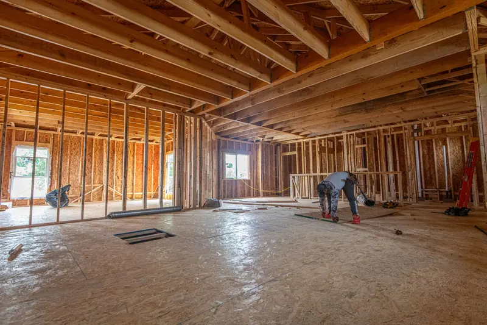

Quick Answers
When does insulation go in on a new house?
After rough-in and before drywall. Plumbing, wiring, ductwork and fan ducts should be in place and the rough inspections passed. Then we air seal and insulate, the insulation inspection happens where your jurisdiction requires one, and drywall follows. Call while the house is still in framing so the timing works.
What does Tennessee code require for a new home?
Statewide, a Zone 4 house needs at least R-38 in the ceiling, R-13 in wood frame walls, R-19 in floors and R-10 continuous or R-13 cavity on crawl space walls. Those values come from the 2009 table Tennessee kept when it adopted the 2018 IECC. A few cities enforce stricter editions.
Does Tennessee require a blower door test?
Not under the statewide rule. Tennessee's amendments made blower door testing optional, with a target of 3 air changes per hour at 50 pascals (3 ACH50) for homes that are tested, and duct testing optional too. Builders may still test to prove the air sealing, and a city on a newer code may ask for more.
Who This Is For
- Custom builders who want a written price for each insulation package before choosing one.
- Owner-builders who need the insulation step planned between rough-in and drywall.
- Plans that put the air handler and ducts in the attic, where an unvented roof deck may make sense.
- Additions and bonus rooms; see garage and bonus room insulation.
- Barndominiums and post-frame homes, covered on our pole barn insulation page.
How New Construction Insulation Works
Much of our part happens on paper before any material shows up.

Plan takeoff
We read the plans for wall heights, roof pitch, ceiling types and HVAC location, confirm which codes office has the address, and price each package that fits the design.
Air seal and insulate
Once the house is dried in, we seal plates and penetrations, then spray foam or set batts. Vented attics get baffles at the eaves and an insulated, weatherstripped access, both items on one Tennessee city's energy inspection checklist. EPA guidance says other trades should be off site while foam is sprayed, with about 24 hours before re-entry for many two-part foams.
Inspection, then drywall
Where insulation is inspected, it happens with every cavity visible. Foam in living space then goes behind a thermal barrier such as 1/2 inch gypsum board. Attics and crawl spaces entered only for service can use an ignition barrier, such as 3/8 inch gypsum or 1.5 inches of mineral fiber, or a foam tested for that use.
Three common packages
| Package | Roof or attic | Walls | Good fit |
|---|---|---|---|
| Open cell roof deck plus batts | Open cell under the deck, unvented attic | Fiberglass batts | Ducts and air handler in the attic |
| Closed cell flash and batt | Closed cell layer plus fiber below | Thin closed cell plus a batt | Tight air sealing at moderate cost |
| All batt | Batts or blown-in on a vented attic floor | Fiberglass batts | Lowest first cost, ducts inside |
Open cell runs about R-3.5 to R-4.0 per inch, and the DOE Building America guide accepts it under roof decks in humid climates with a vapor-permeable interior finish. Closed cell runs about R-6.0 to R-7.4 per inch but costs roughly 60 percent more than open cell for the same R-value, per that guide. An all-batt house leans on air sealing, since fiberglass batts do not stop air.
New Construction Insulation Cost
The package drives the price most, then wall and roof deck area, roof complexity, any barrier coating and the number of trips.
| Source | Item | Range |
|---|---|---|
| Fixr, January 2025 | Spray foam, new construction, installed | $2.75 to $6.50 per sq ft |
| Fixr, January 2025 | Attic spray foam, new construction | $2,500 to $8,000 |
| Fixr, January 2026 | Batt package for a 2,000 sq ft house | $2,000 to $7,400, average $4,700 |
Treat these as national guide figures, checked October 2026, rather than our prices. The Census Bureau puts the median new single-family home completed in 2025 at 2,142 square feet, close to Fixr's 2,000 square foot batt example. For foam, 2,000 square feet of roof deck at $2.75 to $6.50 per square foot works out to about $5,500 to $13,000 before the walls. Try the spray foam cost calculator or the cost guide for more.
Have a set of plans? Call (865) 564-7823 for a free estimate with each package priced side by side.
Codes and Climate in East Tennessee
The whole area sits in Climate Zone 4A, but the code edition depends on the address:
| Jurisdiction | Residential code | Energy code |
|---|---|---|
| Tennessee statewide | 2018 IRC | 2018 IECC with the 2009 insulation table |
| City of Knoxville | 2024 IRC | 2018 IECC |
| City of Maryville | 2024 IRC | 2024 IECC with local changes, since January 1, 2026 |
| City of Sevierville | 2018 IRC | 2018 IECC, amended |
| Lenoir City | 2021 IRC | Not listed |
| City of Alcoa | 2018 IRC | 2018 IECC |
Inside city limits, new home insulation in Knoxville still follows the 2018 IECC with the state table. Maryville stands out as the one local jurisdiction listed on the 2024 IECC, so new home insulation in Maryville faces stricter minimums. Confirm with the local office before plans are final.
Unvented attic rules
Under IRC R806.5, an unvented attic sits inside the thermal envelope, takes no Class I vapor retarder on the ceiling side, and needs air-impermeable insulation against the roof sheathing. When fiber insulation goes below the foam, Zone 4A requires at least R-15 of air-impermeable insulation at the deck, about 2 to 2.5 inches of closed cell. One manufacturer's guide adds that fuel-burning appliances in an unvented attic must be sealed combustion or power vented.
What the Free Estimate Includes
- A takeoff of wall, ceiling, roof deck and floor areas from your plans or the framed house.
- A written price for each package that fits, with R-values listed by assembly.
- Notes on the code path to confirm with your codes office, including barrier and coating needs.
New Construction Insulation FAQ
Related Services
- Open cell spray foam: the usual choice for an unvented roof deck.
- Closed cell spray foam: flash coats, rim joists and crawl space walls.
- Air sealing: plates and penetrations sealed first.
Where We Insulate New Homes Most
- West Knoxville: Hardin Valley's ZIP 37932 has 38.5 percent of homes built in 2010 or later.
- Karns: new subdivisions such as Karns Landing and Padgett Hill.
- Maryville: new homes now built to the city's 2024 energy code.
- Sevierville: Kodak, north of the city, is its most active new-home area.
- Lenoir City: 326 homes built since 2020, under the city's 2021 IRC.
Start With the Plans
Send plans or call (865) 564-7823 for a free estimate, ideally while the house is still being framed.